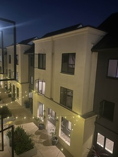

Set 1 - Image 1

Set 1 - Image 2
Two sets of pictures were taken for mosaicing:

To estimate the homography matrix H, we form a system of linear equations from corresponding points between two images. Each pair of correspondences (xₙ, yₙ) → (uₙ, vₙ) contributes two equations to the system:
A = [x₁, y₁, 1, 0, 0, 0, -x₁u₁, -y₁u₁],
[0, 0, 0, x₁, y₁, 1, -x₁v₁, -y₁v₁],
[x₂, y₂, 1, 0, 0, 0, -x₂u₂, -y₂u₂],
[0, 0, 0, x₂, y₂, 1, -x₂v₂, -y₂v₂],
[x₃, y₃, 1, 0, 0, 0, -x₃u₃, -y₃u₃],
[0, 0, 0, x₃, y₃, 1, -x₃v₃, -y₃v₃],
[x₄, y₄, 1, 0, 0, 0, -x₄u₄, -y₄u₄],
[0, 0, 0, x₄, y₄, 1, -x₄v₄, -y₄v₄]
b = [u₁],
[v₁],
[u₂],
[v₂],
[u₃],
[v₃],
[u₄],
[v₄]
The equation A · h = b is solved using least squares, where h is the 8-dimensional vector representing the entries of the homography matrix (the 9th value is fixed to 1 for scale). The resulting 3×3 matrix H maps points from the first image to the second.
H1 = [[1.447739337700669759e+00, 4.322275120828126399e-02, -1.284721206179840181e+02],
[2.744618702282577427e-01, 1.298791600810339952e+00, -2.613941193162229837e+01],
[2.110015892463942399e-03, 1.444242532437192534e-05, 1.000000000000000000e+00]]
Comparison of Nearest Neighbor vs Bilinear: NN is faster but blockier; BI is smoother but may produce minor color holes.


Procedure to get the Mosaic: First, find the bounding box of the output mosaic by warping the corners of all input images. Then, create an output canvas large enough to hold the entire mosaic. For each input image, warp it into the output canvas using the computed homography and blend it with the existing content using weighted averaging to avoid harsh seams. Finally, normalize the color by the accumulated weights to ensure weighted averaging is implemented properly.